전자기사 (2007-03-04 기출문제)
1과목: 전기자기학
1. 유전체 역률(tanδ)과 무관한 것은?
- 주파수
- 정전용량
- 인가전압
- 누설저항
(정답률: 알수없음)

2. 전계 E[V/m] 및 자계 H[AT/m]인 전자파가 자유공간 중을 빛의 속도로 전파될 때 단위시간에 단위면적을 지나는 에너지는 몇 W/m2인가? (단, C는 빛의 속도를 나타낸다.)
- EH
- EH2
- E2H
- 1/2CE2H2
(정답률: 알수없음)
3. 자유공간에서 변위 전류는 무엇에 의해서 발생하는가?
- 전압에 의해서
- 자계에 의해서
- 전속밀도에 의해서
- 자속밀도에 의해서
(정답률: 알수없음)
4. 다음 유전체 중 비유전율이 가장 작은 것은?
- 고무
- 유리
- 운모
- 물
(정답률: 알수없음)
5. 그림과 같은 수평한 연철봉 위에 절연된 동선을 감아 이것에 저항, 전류, 스위치를 접속하여 연철봉의 한 끝에는 알루미늄링을 출과 일치시켜 움직일 수 있도록 가느다란 실로 매달아 정지시켰을 때 다음 설명 중 옳은 것은?
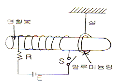
- 전류를 계속하여 흘리고 있을 때 알루미늄링은 왼쪽으로 움직인다.
- 스위치 S를 닫아 전류를 흘리고 있다가 스위치 S를 개방하는 순간 알루미늄링은 좌우로 진동한다.
- 스위치 S를 닫는 순간 알루미늄링은 오른쪽으로 움직인다.
- 전류를 흘리고 있다가 스위치 S를 개방하는 순간 알루미늄링은 오른쪽으로 움직인다.
(정답률: 알수없음)
6. 전기력선의 성질에 대한 설명으로 옳지 않은 것은?
- 전계가 0이 아닌 곳에서는 2개의 전기력선은 교차하는 일이 없다.
- 전기력선은 도체 내부에 존재한다.
- 전하가 없는 곳에서는 전기력선의 발생, 소멸이 없다.
- 전기력선은 그 자신만으로 폐곡선을 만들지 않는다.
(정답률: 알수없음)
7. 유전체 A, B의 접합면에 전하가 없을 때, 각 유전체 중 전계의 방향이 그림과 같고 EA = 100 V/m 이면 EB는 몇 V/m인가?
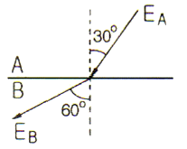
- 100/3
- 100/√3
- 300
- 100√3
(정답률: 알수없음)
8. 벡터 A=i-j+3k, B=i+ak 일 때 벡터 A와 벡터 B가 수직이 되기 위한 a의 값은? (단, I, j, k 는 x, y, z 방향의 기본벡터이다.)
- -2
- -(1/3)
- 0
- 1/2
(정답률: 알수없음)
9. 맥스웰의 전자방정식 중 패러데이의 법칙에서 유도된 식은? (단, D : 전속밀도, ρv : 공간 전하밀도, B : 자속밀도, E : 전계의 세기, J : 전류밀도, H : 자계의 세기)
- div D = ρv
- div B = 0
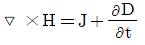
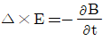
(정답률: 알수없음)
10. 유전체의 분극도 표현으로 옳지 않은 것은?(단, P : 분극의 세기, D : 전속밀도, E : 전계의 세기, ε : 유전율, ε0 : 진공의 유전율, ℇr : 비유전율이다.)
- P = D - ε0E
- P = D - ε0(D/ε)
- P = D(1-(1/εr))
- P = E - ε0(D/ε)
(정답률: 알수없음)
11. 진공 중에 있는 반지름 a[m]인 도체구의 정전용량[F]은?
- 4πε0a
- 2πε0a
- ε0a
- a
(정답률: 알수없음)
12. 다음 중 자기회로의 자기저항에 대한 설명으로 옳은 것은?
- 자기회로의 단면적에 비례한다.
- 투자율에 반비례한다.
- 자기회로의 길이에 반비례한다.
- 단면적에 반비례하고 길이의 제곱에 비례한다.
(정답률: 알수없음)
13. 전위 V가 단지 × 만의 함수이며 × = 0에서 V = 0이고, × = d 일 때 V = V0 인 경계조건을 갖는다고 한다. 라플러스방정식에 의한 V의 해는?
- ▽2V = ρ
- V0d
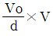
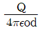
(정답률: 알수없음)
14. 최대 전계 Em = 6 V/m 인 평면전자파가 수중을 전파할 때 자계의 최대치는 약 몇 AT/m인가? (단, 물의 비유전율 εs= 80, 비투자율 μs = 1이다.)
- 0.071
- 0.142
- 0.284
- 0.426
(정답률: 알수없음)
15. 점전하 Q1, Q2 사이에 작용하는 쿨롱의 힘이 F 일 때, 이 부근에 점전하 Q3을 놓을 경우 Q1과 Q2 사니의 쿨롱의 힘음 F'이다. F와 F'의 관계로 옳은 것은?
- F > F'이다.
- F < F'이다.
- F = F'이다.
- Q3의 크기에 따라 다르다.
(정답률: 알수없음)
16. 1μA의 전류가 흐르고 있을 때 1초 동안 통과하는 전자수는 약 몇 개인가? (단, 전자 1개의 전하는 1.602 × 10-19C이다.)
- 6.24 × 1010
- 6.24 × 1011
- 6.24 × 1012
- 6.24 × 1013
(정답률: 알수없음)
17. 그림과 같이 평등자장 및 두 평행 도선이 놓여 있을 때 두 평행 도선상을 한 도선봉이 V[m/s]의 일정한 속도로 이동한다면 부하 R[Ω]에서 줄열로 소비되는 전력[W]은 어떻게 표시되는가? (단, 도선봉과 두 평행 도선은 완전도체로 저항이 없는 것으로 한다.)
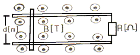
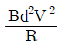
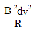
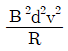
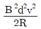
(정답률: 알수없음)
18. 그림과 같이 직류전원에서 부하에 공급하는 전류는 50A이고 전원전압은 480V이다. 도선이 10cm 간격으로 평행하게 배선되어 있다면 1m 당 두 도선사이에 작용하는 힘은 몇 N 이며, 어떻게 작용하는가?
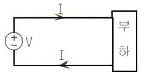
- 5×10-3, 흡인력
- 5×10-3, 반발력
- 5×10-2, 흡인력
- 5×10-2, 반발력
(정답률: 알수없음)
19. N회 감긴 환상코일의 단면적이 S[m2]이고 평균 길이가 l[m]이다. 이 코일의 권수를 반으로 줄이고 인덕턴스를 일정하게 하려고 할 때, 다음 중 옳은 것은?
- 단면적을 2배로 한다.
- 길이를 1/4로 한다.
- 전류의 세기를 4배로 한다.
- 비투자율을 2배로 한다.
(정답률: 알수없음)
20. 진공 중의 도체계에서 유도계수와 용량계수의 성질 중 옳지 않은 것은?
- 용량계수는 한상 0보다 크다.
- q11 ≧ 0 -(q21 + q31 + q41 + ㆍㆍㆍ+ qn1)
- qrs = qsr 이다.
- 유도계수와 용량계수는 항상 0 보다 크다.
(정답률: 알수없음)
2과목: 회로이론
21. R-L 직렬회로의 과도응답에서 감쇠율은?
- R/L
- L/R
- R
- L
(정답률: 알수없음)
22. 다음 그림에 표시한 여파기는?
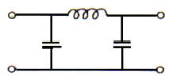
- 고역 여파기
- 대역 여파기
- 대역 소거 여파기
- 저역 여파기
(정답률: 알수없음)
23. 다음 그림과 같은 회로의 구동점 임피던스가 정저항 회로가 되기 위한 Z1, Z2 및 R의 관계는?
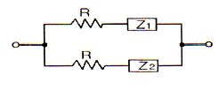
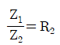
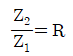
- Z1Z2 = R2
- Z1Z2 = R
(정답률: 알수없음)
24. 100μF의 콘덴서에 100V, 60Hz의 교류 전압을 가할 때의 무효전력은 몇 VAR 인가?
- 40π
- 60π
- 120π
- 240π
(정답률: 알수없음)
25. RLC 직렬회로에 대하여, 임의 주파수를 인가 하였을 때 회로의 특성이 공진 회로의 특성으로 나타났다. 동일한 이 회로에 대하여 주파수를 증가시켰을 때, 주파수에 따른 회로의 특성으로 옳은 것은?
- 유도성 회로의 특성이 나타난다.
- 용량성 회로의 특성이 나타난다.
- 저항성 회로의 특성이 나타난다.
- 공진 회로의 특성이 나타난다.
(정답률: 알수없음)
26. 상태변수 해석을 하기 위하여 기본적으로 회로에 적용하는 이론적인 정리들 중 다음과 같은 설명에 적합한 정리는?
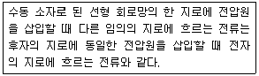
- 테브난 정리
- 가역 정리
- 텔레건 정리
- 밀만 정리
(정답률: 알수없음)
27. sinωt 로 표시된 정현파의 라플라스 변환을 바르게 나타낸 것은?
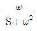
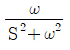
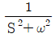
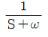
(정답률: 알수없음)
28. R-C 직렬회로에 일정 전압 E[V]를 인가하고, t=0에서 스위치를 ON한다면 콘덴서 양단에 걸리는 전압 Vc는? (문제 오류로 정답은 3번입니다.)
- 복원중 (정확한 보기내용을 아시는분께서는 오류 신고를 통하여 보기 내용 작성 부탁드립니다.)
- 복원중 (정확한 보기내용을 아시는분께서는 오류 신고를 통하여 보기 내용 작성 부탁드립니다.)
- 복원중 (정확한 보기내용을 아시는분께서는 오류 신고를 통하여 보기 내용 작성 부탁드립니다.)
- 복원중 (정확한 보기내용을 아시는분께서는 오류 신고를 통하여 보기 내용 작성 부탁드립니다.)
(정답률: 알수없음)
29. RL 직렬회로에 일정한 정현파 전압이 인가되었다. 이때 인가된 신호원과 저항 및 인덕터에서의 전류 위상 관계를 올바르게 기술한 것은?
- 저항 및 신호원과 인덕터에서의 전류 위상은 모두 동일하다.
- 저항에서의 전류가 신호원 및 인덕터에서의 전류보다 빠르다.
- 저항과 신호원에서의 전류가 인덕터에서의 전류보다 빠르다.
- 인덕터에서의 전류가 저항 및 신호원에서의 전류보다 빠르다.
(정답률: 알수없음)
30. 다음 4단자 회로망에서의 Y-Parameter Y11, Y21 은?
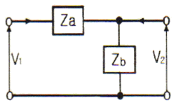
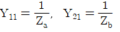
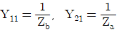
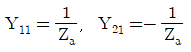
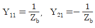
(정답률: 알수없음)
31. 저항 1Ω과 리액턴스 2Ω을 병렬로 연결한 회로의 역률은 약 얼마인가?
- 0.2
- 0.5
- 0.9
- 1.5
(정답률: 알수없음)
32. 4단자 회로망에서 파라미터 사이의 관계로 옳은 것은?
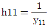
- h22=z22
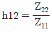
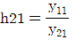
(정답률: 알수없음)
33. 다음 설명은 어떤 회로망 정리를 표현한 것인가?
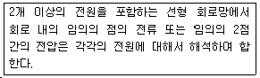
- 노튼 정리
- 보상 정리
- 테브난 정리
- 중첩의 정리
(정답률: 알수없음)
34. 다음 회로망의 합성 저항은?
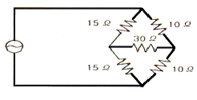
- 6Ω
- 12Ω
- 30Ω
- 50Ω
(정답률: 알수없음)
35. 60+80[V]인 전압을 어떤 회로에 인가했더니 4+j1[A]인 전류가 흘렀다. 이 회로에서 소비되는 유효전력은?
- 140W
- 320W
- 480W
- 500W
(정답률: 알수없음)
36. 다음 중 이상변압기 두 코일의 권선비는?
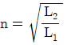
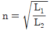
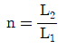
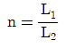
(정답률: 알수없음)
37. 다음 중 정현파(전파)의 파고율은?
- 1
- √2
- √3
- 2
(정답률: 알수없음)
38. 그림과 같은 단일 구형파의 라플라스 변환은?
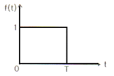
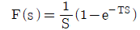
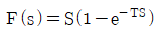
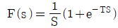
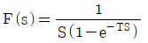
(정답률: 알수없음)
39. 고유 저항 р, 반지름T, 길이 ℓ인 전선의 저항이 R일 때, 같은 재료로 반지름은 m배, 길이는 n배로 하면 저항은 몇 배가 되는가?
- m/n2
- m/n
- n/m
- n/m2
(정답률: 알수없음)
40. 임의의 회로의 실효 전력이 30W 이고, 무효전력이 40VAR일 때, 역률은?
- 0.6
- 0.8
- 1.0
- 1.2
(정답률: 알수없음)
3과목: 전자회로
41. J-K 플립플롭을 그림과 같이 결선하고 Clock Pulse가 인가될 때 출력 Q의 동작은?
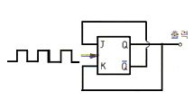
- Toggle
- Reset
- Set
- NO Change
(정답률: 알수없음)
42. 그림과 같은 트랜지스터 소신호 증폭기에서 입력 임피던스 Rin은 다음 중 어느 값에 가장 가까운가? (단, Rc=5kΩ, Re=2kΩ, Rs=3kΩ, hie=1kΩ, hfe=50이다.)
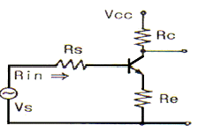
- 50kΩ
- 100kΩ
- 200kΩ
- 300kΩ
(정답률: 알수없음)
43. 다음 증폭회로에서 콘덴서 C2를 제거 했을 때 발생하는 현상으로 옳은 것은?
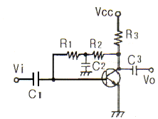
- 출력의 일부가 베이스로 부궤한되어 이득이 감소한다.
- 입력의 일부가 컬렉터로 흘러 들어가서 이득이 증가한다.
- 이득에는 변동이 없다.
- 발진소자의 제거로 발진이 중단된다.
(정답률: 알수없음)
44. 수정발진기의 주파수 변동 원인과 그 대책에 대한 설명으로 틀린 것은?
- 동조점의 불안정- Q가 작은 수정진동자 사용
- 주위온도의 변동-항온조 사용
- 부하 변동- 완충 증폭기 사용
- 전원전압 변동-정전압회로 사용
(정답률: 알수없음)
45. mod-12 존슨 카운터를 설계하기 위하여 필요한 플립플롭의 수는 몇 개 인가?
- 4
- 6
- 8
- 12
(정답률: 알수없음)
46. 정류기에서 사용되는 평활회로 중 직류출력전압은 낮지만 전압변동율이 좋은 평활회로는?
- 콘덴서 입력형 필터
- 초크 입력형 필터
- 저항 입력형 필터
- 다이오드 입력형 필터
(정답률: 알수없음)
47. 다음 반도체 중 기억소자로서 적당치 않은 것은?
- PROM
- PRAM
- SRAM
- APD
(정답률: 알수없음)
48. 그림의 연상 증폭기를 사용한 회로에서 출력전압 Vo는? 단(
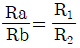
임)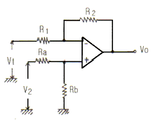
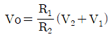
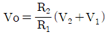
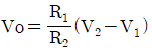
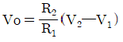
(정답률: 알수없음)
49. 베이스변조와 비교하여 컬렉터변조회로의 특징으로 옳지 않은 것은?
- 대 전력 송신기에 적합하다.
- 변조효율이 좋다.
- 높은 변조도에서 일그러짐이 좋다.
- 조정이 어렵고 안정도가 떨어진다.
(정답률: 알수없음)
50. 궤환 발진기의 바크 하우젠(Barkhausen)발진조건은?
- βA = ∞
- βA = 0
- βA = 1
- βA ≤ 1
(정답률: 알수없음)
51. 다음 RC결합 소 신호 증폭기에서 저주파수대역과 고주파수대역에서 전압이득이 감소하는 이유로 옳지 않은 것은?(단, 중간주파수대역에서 C1,C2,C3의 리액턴스를 무시할 수 있다.)
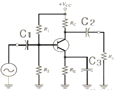
- 고주파수 및 저주파수에서 C3 에 의한 바이어스 효과가 크기 때문에 이득이 감소한다.
- 트랜지스터의 접합용량은 고주파대역에서 이득감소의 원인이 된다.
- C1,C2,는 저주파에서 그 양단의 전압 강하로 인해서 전압이득을 감소한다.
- C3는 저주파에서 부 궤환을 일으켜서 이득을 감소시킨다.
(정답률: 알수없음)
52. 저주파 증폭기의 이득이 40dB일때 19/100의 부궤환을 걸면 찌그러짐은 몇 % 개선되는가?
- 5
- 10
- 15
- 20
(정답률: 알수없음)
53. 불 대수의 정리 중 옳지 않은 것은?
- A + B = B +A
- A +BC = (A+B)(A+C)
- A + = 1
- AB =
 +B
+B
(정답률: 알수없음)
54. 트랜지스터의 ho 정수를 측정할 때 필요한 조건은?
- 출력단자를 개방시킨다.
- 출력단자를 단락시킨다.
- 입력 단자를 개방시킨다.
- 입력 단자를 단락시킨다.
(정답률: 알수없음)
55. 짧은 ON시간과 긴 OFF시간을 가지며 펄스(디지털)신호를 사용하는 증폭기회로에서 주로 쓰이는 증폭기는?
- A급
- B급
- C급
- D급
(정답률: 알수없음)
56. 전가산기 회로(full adder)의 구성으로 옳은 것은?
- 입력 2개, 출력 4개로 구성
- 입력 2개, 출력 3개로 구성
- 입력 3개, 출력 2개로 구성
- 입력 3개, 출력 3개로 구성
(정답률: 알수없음)
57. 부궤한 증폭기에 대한 설명 중 옳은 것은?
- 이득만 감소되고 기타 특성에는 변화가 없다.
- 이득이 커지고, 잡음, 왜율, 대역폭 특성이 개선된다.
- 이득이 감소되는 반면 잡음, 왜율, 대역폭은 증가된다.
- 이득, 잡음, 왜율은 감소되는 반면 대역폭이 넓어진다.
(정답률: 알수없음)
58. 그림과 같은 회로의 동작에 대한 설명으로 옳은 것은?
- 정방향 peak를 기준레벨 VR로 클램프 한다.
- 부방향 peak를 기준레벨 VR로 클램프 한다.
- 출력은 2Vi 이다.
- 출력은 Vi 이다.
(정답률: 알수없음)
59. 복원중 (정확한 문제내용을 아시는분께서는 오류 신고를 통하여 보기 내용 작성 부탁드립니다. 문제 오류로 정답은 3번입니다. 여기서 3번을 누르시면 정답처리됩니다.))
- 복원중 (정확한 보기내용을 아시는분께서는 오류 신고를 통하여 보기 내용 작성 부탁드립니다.)
- 복원중 (정확한 보기내용을 아시는분께서는 오류 신고를 통하여 보기 내용 작성 부탁드립니다.)
- 복원중 (정확한 보기내용을 아시는분께서는 오류 신고를 통하여 보기 내용 작성 부탁드립니다.)
- 복원중 (정확한 보기내용을 아시는분께서는 오류 신고를 통하여 보기 내용 작성 부탁드립니다.)
(정답률: 알수없음)
60. 다음 회로에서 A=1, B=0, C=1, D=1일 때 출력 Y, Z의 논리 상태로 옳은 것은?
- Y=0, Z=1
- Y=1, Z=1
- Y=1, Z=0
- Y=0, Z=0
(정답률: 알수없음)
4과목: 물리전자공학
61. 확산정수 D, 이동도 , 절대온도 T 간의 관계식을 옳게 나타낸 것은? (단, k는 볼츠만의 상수이고, e는 캐리어의 전하이다.)
(정답률: 알수없음)
62. 다음 중 2종의 금속을 접속하고 직류를 흘리면 그 접합부에 온도 차이가 생기는 효과는?
- Thomson 효과
- Hall 효과
- Seebeck 효과
- Peltier 효과
(정답률: 알수없음)
63. 실리콘 제어 정류소자(SCR)의 설명으로 옳지 않은것은?
- 동작원리는 PNPN다이오드와 같다.
- 일반적으로 사이리스터(thyristor)라고도 한다.
- 게이트 전류에 의하여 방전개시 전압을 제어할 수 있다.
- SCR의 브레이크 오버 전압은 게이트가 차단 상태로 들어가는 전압이다.
(정답률: 알수없음)
64. 일정한 자속밀도 B를 가지고 있는 균일한 자계와 수직을 이루는 평면상을 일정한 속도 V로 원운동하고 있는 전자의 회전 주기에 관계 없는 것은?
- 자속 밀도
- 전자의 전하
- 전자의 질량
- 전자의 속도
(정답률: 알수없음)
65. 진성 반도체에서 전자나 전공의 농도가 같다고 할 때 전도대의 준위를 0.4eV, 가전자대의 준위가 0.8eV라 하면 Fermi준위는 몇 eV인가?
- 0.32
- 0.6
- 1.2
- 1.44
(정답률: 알수없음)
66. 반도체에서 용량의 변화에 의해 동작되는 소자로 가변용량 다이오드라고도 하는 것은?
- 쇼트키(schottky)다이오드
- 바렉터(varactor)다이오드
- 터널(tunnel)다이오드
- 제너(zener)다이오드
(정답률: 알수없음)
67. 전계의 세기 E=105V/m의 평등 전계 중에 놓인 전자에 가해지는 전자의 가속도는 약 얼마인가?
- 1.602×1014m/s2
- 1.75×1016m/s2
- 5.93×105m/s2
- 1600m/s2
(정답률: 알수없음)
68. 물질을 구성하고 있는 소립자에도 파동성이 있다고 최초로 주장한 사람은?
- Einstein
- De Broglie
- Rutherford
- Avogadro
(정답률: 알수없음)
69. 300〫 K에서 P형 반도체의 억셉터 준위가 32%가 채워져 있을 때 페르미 준위와 억셉터 준위의 차이는 몇 eV 인가?
- 0.02
- 0.08
- 0.2
- 0.8
(정답률: 알수없음)
70. 전자볼트(elelctron volt, eV)는 전자 한 개가 1볼트의 전위차를 통과할 때 얻는 운동 에너지를 1ev로 정한것이다. 1eV는 대략 몇 J(joule)인가?
- 9.109×1031
- 1.759×1011
- 1.602×1019
- 6.547×1034
(정답률: 알수없음)
71. 실리콘 단결정 반도체에서 P형 불순물로 사용될 수 있는 것은?
- P(인)
- As(비소)
- B(붕소)
- Sb(안티몬)
(정답률: 알수없음)
72. 터널 다이오드(tunnel diode)의 특징 중 옳지 않은 것은?
- 부성 저항 특성이다.
- 역바이어스 상태에서는 도체이다.
- 작은 정바이어스 상태에서 저항은 대단히 크다.
- 고속 스위칭 회로와 마이크로 웨이브 발진기에 응용된다.
(정답률: 알수없음)
73. 반도체(Semiconductors)에 관한 설명 중 서로 옳지 않은 것은?
- 열전대 - Seebeck 효과
- 홀 발진기 - 자기효과
- 전자 냉각 - Peltier 효과
- 광전도 셀 - 외부 광전 효과
(정답률: 알수없음)
74. 서미스터(Thermistor)소자에 대한 설명 중 옳지 않은 것은?
- 반도체로 만들어진다.
- 저항의 온도계수가 +값이다.
- 온도에 따라 저항의 값이 크게 변화한다.
- 온도 자동제어의 검출부나 회로의 온도 특성보상등에 사용된다.
(정답률: 알수없음)
75. 온도의 상승에 따라 제너 항복(Zener break down)전압은?
- 증가한다.
- 감소한다.
- 증가했다 감소한다.
- 온도상승과 무관하다
(정답률: 알수없음)
76. 진성 반도체에 있어서 Fermi준위의 위치는? (단, Ec는 전도대(conduction band)중에서 가장 낮은 에너지 준위이고, Ev는 가전대(valence band)중에서 가장 높은 에너지 준위이다.)
- Ec 보다 약간 높다.
- Ec 보다 약간 낮다.
- Ev 보다 약간 높다.
- Ec와 Ev의 중간 정도이다.
(정답률: 알수없음)
77. 충분히 높은 주파수의 빛이 금속 표면에 가해졌을 때 그 금속의 표면에서 전자가 방출되는 현상을 무엇이라 하는가?
- 광학 효과 (Optical Effect)
- 컴프턴 효과(Compton Effect)
- 에벌런치 효과(Avalanche Effect)
- 광전 효과(Photoelectric Effect)
(정답률: 알수없음)
78. 정상 동작 상태로 바이어스 된 NPN 트랜지스터에 컬렉터 접합을 통과하는 주된 전류는?
- 확산 전류
- 정공 전류
- 드리프트 전류
- 베이스 전류와 같다.
(정답률: 알수없음)
79. 컬렉터(collector)접합부의 온도 상승으로 인하여 트랜지스터가 파괴되는 현상은?
- 얼리(early)현상
- 항복(break down)현상
- 열 폭주(thermal runaway)현상
- 펀치 스로우(punch through)현상
(정답률: 알수없음)
80. 다음 중 더블 베이스 다이오드(double base diode)라고도 하는 것은?
- 역 다이오드
- 쇼트키 다이오드
- 바렉터 다이오드
- 유니정션 트랜지스터(UJT)
(정답률: 알수없음)
5과목: 전자계산기일반
81. 영어회화와 비슷한 구어체 문장 형태로 구성되어 있으며 하드웨어에 관한 전문 지식이 없이도 쉽게 배울 수 있고, 사무 처리용으로 많이 쓰이는 컴퓨터 프로그래밍 언어는?
- FORTRAN
- C
- ALGOL
- COBOL
(정답률: 알수없음)
82. 다음 중 두 문자의 비교(compare)에 가장 적합한 논리 연산은?
- AND
- Exclusive-OR
- OR
- NOR
(정답률: 알수없음)
83. 8비트의 데이터 버스와 16비트의 주소 버스를 가지는 마이크로컴퓨터의 최대 주기억 용량은 몇 Kbyte인가?
- 32
- 64
- 128
- 256
(정답률: 알수없음)
84. 기억 장치에서 명령어를 읽어 CPU로 가져오는 것을 무엇이라 하는가?
- Indirect
- Execute
- Interrupt
- Fetch
(정답률: 알수없음)
85. 다음 프로그램 작성 과정을 순서대로 올바르게 나열한 것은?
- ④ → ① → ② → ③ → ⑤
- ④ → ① → ② → ⑤ → ③
- ① → ④ → ② → ③ → ⑤
- ① → ② → ⑤ → ③ → ④
(정답률: 알수없음)
86. 컴퓨터의 여러 명령어 분류 방식에서 반드시 누산기(Accumulator)를 사용하는 방식은?
- 0-주소지정방식
- 1-주소지정방식
- 2-주소지정방식
- 3-주소지정방식
(정답률: 알수없음)
87. 주소지정방식(Addressing Mode)에서 오퍼랜드(Ooerand)부분에 데이터가 포함되어 실행되는 방식은?
- index Addressing Mode
- direct Addressing Mode
- indirect Addressing Mode
- immediate Addressing Mode
(정답률: 알수없음)
88. DMA(Direct Memory Access)에 대한 설명 중 옳지 않은 것은?
- 자료전송에 CPU의 Register를 직접 사용한다.
- 속도가 빠른 자료들을 입.출력할 때 사용하는 방식이다.
- DMA는 기억장치와 주변장치 사이에 직접 자료를 전송한다.
- DMA는 주기억 장치에 접근하기 위해 Cycle Stealing 을 행한다.
(정답률: 알수없음)
89. 다음 중 컴파일러에서 하나의 프로그램이 처리되는 과정을 옳게 나열한 것은?
- 번역 → 적재 → 실행
- 번역 → 실행 → 적재
- 적재 → 실행 → 번역
- 적재 → 번역 → 실행
(정답률: 알수없음)
90. 다음 중 데이터 처리면에서 CPU와 입.출력장치와의 속도차에서 오는 비효울적인 요소를 최대한 줄이기 위해 사용되는것은?
- 병렬연산장치
- index register
- 채널제어장치
- 부동소수점 부가기구
(정답률: 알수없음)
91. 다음은 인터럽트 체제의 동작을 나열하였다. 수행순서를 올바르게 나열 한 것은?
- ② → ① → ④ → ③
- ② → ④ → ① → ③
- ④ → ② → ① → ③
- ④ → ① → ② → ③
(정답률: 알수없음)
92. 10진법 11을 16진법으로 표현하면?
- 11
- A
- B
- C
(정답률: 알수없음)
93. 다음은 실행 사이클 중에서 어떤 명령을 나타낸 것인가?
- STA명령
- AND명령
- LDA명령
- JMP명령
(정답률: 알수없음)
94. pusu와 pop operation에 의해서만 접근 가능한 sterage device는?
- MBR
- queue
- stack
- cache
(정답률: 알수없음)
95. 부호화된 데이터를 해독하여 정보를 찾아내는 조합논리회로는?
- 인코더
- 디코더
- 디멀티플렉서
- 멀티플렉서
(정답률: 알수없음)
96. 다음 운영체제(OS)의 구성요소 중 제어 프로그램(Control program)에 포함되지 않은 것은?
- Data management program
- Jop management program
- Superviser program
- Service program
(정답률: 알수없음)
97. 다음 중 데이터통신에 널리 쓰이며, 특히 마이크로프로세서 용으로 많이 사용되는 코드는?
- EBCDIC코드
- Excess-3코드
- ASCⅡ 코드
- Gray코드
(정답률: 알수없음)
98. 어큐뮬레이터(Accumulator)에 대한 설명으로 옳은 것은?
- 명령을 해독하는 장치
- 연산 결과의 상태를 기억하는 장치
- 명령의 순서를 일시적으로 기억하는 장치
- 산술.논리연산의 결과를 일시적으로 기억하는 장치
(정답률: 알수없음)
99. 인터럽트를 발생시키는 모든 장치들을 직렬로 연결하고, 우선순위가 높은 순서로 연결하는 방식은?
- DMA방식
- Polling방식
- Daisy-Chain방식
- Strobe방식
(정답률: 알수없음)
100. 목적 프로그램을 생성하지 않은 방식은?
- compiler
- assembler
- interpreter
- micro-assembler
(정답률: 알수없음)